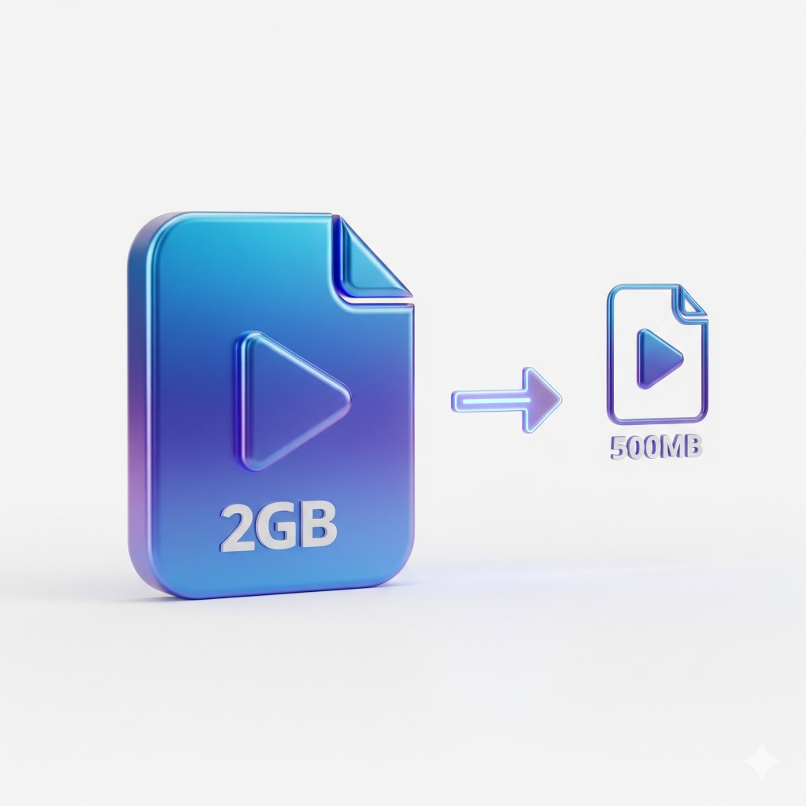

Videos are the biggest storage hogs on your iPhone. A single 4K video recorded at 60fps consumes about 400MB per minute. Record a 5-minute video at your kid's birthday party? That's 2GB gone. Fortunately, you can compress these videos to reclaim massive amounts of storage.
Quick Answer
To compress videos on iPhone, use an app like Fast Cleaner: Select your videos → Choose compression quality → Tap Compress. You can reduce file sizes by 50-80% with minimal visible quality loss. The compressed video replaces the original, freeing up storage instantly.

How Much Space Do iPhone Videos Use?
Understanding video file sizes helps you realize why compression is so effective:
| Video Quality | Size per Minute | 10-Minute Video |
|---|---|---|
| 1080p HD at 30fps | 60 MB | 600 MB |
| 1080p HD at 60fps | 90 MB | 900 MB |
| 4K at 24fps | 135 MB | 1.35 GB |
| 4K at 30fps | 170 MB | 1.7 GB |
| 4K at 60fps | 400 MB | 4 GB |
If you record in 4K (the default on newer iPhones), even a modest video collection can consume 30-50GB of storage.
Method 1: Compress Videos with Fast Cleaner
Fast Cleaner offers the simplest way to compress videos directly on your iPhone:
- Download Fast Cleaner from the App Store
- Open the app and tap Compress Videos
- Select the videos you want to compress
- Choose your compression level:
- Low compression: ~30% smaller, highest quality
- Medium compression: ~50-60% smaller, recommended
- High compression: ~70-80% smaller, good for sharing
- Tap Compress and wait for processing
- Review the results — see before/after file sizes
- Save to replace originals and free up space
Best Practice
Use Medium compression for videos you want to keep long-term. It offers the best balance of file size reduction and quality preservation. Save High compression for videos you plan to share on social media.
Compress videos in bulk
Fast Cleaner can process multiple videos at once — reclaim gigabytes in minutes.
Method 2: Change Recording Settings for Future Videos
While this doesn't compress existing videos, you can prevent future videos from taking up excessive space:
- Open Settings on your iPhone
- Scroll down and tap Camera
- Tap Record Video
- Choose a lower resolution:
- 1080p HD at 30fps — Good for most purposes
- 1080p HD at 60fps — Smoother motion, larger files
- 4K at 30fps — High quality when needed
For everyday videos (family moments, quick clips), 1080p at 30fps is more than sufficient and uses 65% less storage than 4K at 60fps.
Method 3: Use Shortcuts App (Advanced)
Apple's Shortcuts app can create an automation for video compression:
- Open the Shortcuts app
- Tap + to create a new shortcut
- Add action: Select Photos (filter for videos)
- Add action: Encode Media
- Set Size to a lower resolution (e.g., 1080p)
- Add action: Save to Photo Album
- Name it "Compress Video" and save
Note
The Shortcuts method saves a new compressed video but doesn't delete the original. You'll need to manually delete the original to free up space. Apps like Fast Cleaner handle this automatically.
Understanding Video Compression
Video compression works by removing redundant data and applying efficient encoding. Here's what happens:
- Spatial compression: Similar pixels within each frame are grouped
- Temporal compression: Only changes between frames are stored
- Codec efficiency: HEVC (H.265) is 40% more efficient than older H.264
- Bitrate reduction: Less data per second while maintaining perceived quality
Will I Notice Quality Loss?
At medium compression settings, quality loss is virtually imperceptible when viewing on phones, tablets, or even most TVs. You might notice differences only when:
- Zooming in significantly on video frames
- Viewing on a large 4K display at close range
- Comparing side-by-side on a professional monitor
For 99% of use cases — sharing with family, posting on social media, rewatching memories — compressed videos look identical to originals.
How Much Space Can You Save?
Here's what typical compression savings look like:
| Original Video | After Compression | Space Saved |
|---|---|---|
| 4K video (2 GB) | ~600 MB | 1.4 GB (70%) |
| 1080p video (500 MB) | ~175 MB | 325 MB (65%) |
| 20 videos (15 GB total) | ~5 GB | 10 GB (67%) |
If you have 30GB of videos on your iPhone, compression could free up 15-20GB of storage.
Tips for Best Results
Before Compressing
- Back up important videos to iCloud, Google Photos, or a computer first
- Prioritize compressing 4K and 60fps videos (biggest gains)
- Consider keeping originals of truly important moments (wedding, birth, etc.)
Compression Settings Guide
- Family memories: Medium compression — great quality, good savings
- Social media clips: High compression — platforms re-compress anyway
- Professional work: Low compression or keep originals
Frequently Asked Questions
Does iPhone have a built-in video compressor?
No, iPhone doesn't include a native video compression tool. You can only change recording settings for future videos. To compress existing videos, use a third-party app like Fast Cleaner or create a Shortcuts automation.
Is it safe to compress videos?
Yes. Compression is a one-way process — the original is replaced with the smaller version. To be safe, back up irreplaceable videos before compressing. Fast Cleaner shows you a preview before finalizing so you can verify quality.
Can I compress videos without an app?
You can use the Shortcuts app to create a basic compression workflow, but it requires technical setup and doesn't delete originals automatically. For most users, a dedicated app is simpler and more effective.
Will compressed videos look bad on my TV?
At medium compression, videos still look excellent on most TVs. You may notice minor quality reduction on large 4K TVs if viewing close up. For TV viewing, consider using low compression to maintain maximum quality.
How long does video compression take?
Processing time depends on video length and your iPhone model. Typically: 1 minute of video takes about 10-30 seconds to compress. Newer iPhones with better processors compress faster. You can queue multiple videos and let them process.
Summary
Video compression is the fastest way to reclaim large amounts of iPhone storage. With modern compression techniques, you can reduce video file sizes by 50-80% with virtually no perceptible quality loss.
Key takeaways:
- 4K videos at 60fps use 400MB per minute — compression can recover most of this
- Medium compression offers the best quality-to-size ratio for personal videos
- Always back up irreplaceable videos before compressing
- Change camera settings to record at 1080p for everyday videos going forward
Free up gigabytes of video storage
Download Fast Cleaner and compress your video library in minutes.